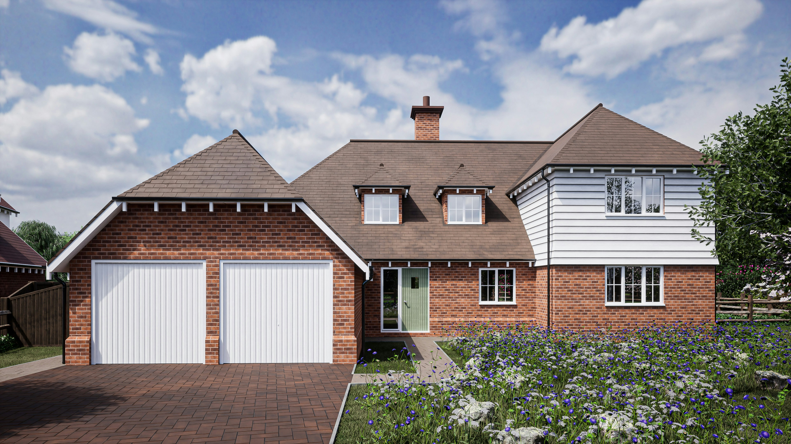
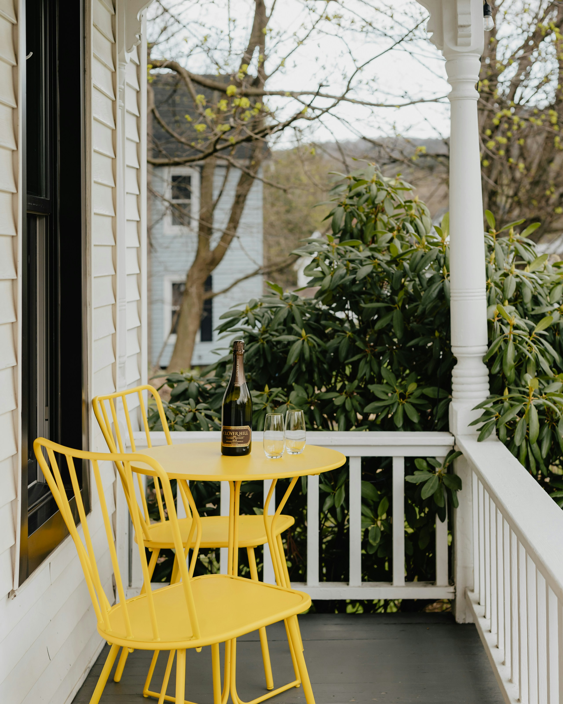

Kitchen extensions
Extend at the rear and plan the new opening so the original rooms work with the added space.
House extensions
Local builders in Wordsley
Extensions, conversions, RSJs and renovations around Wordsley and the Glass Quarter.
Local homes
Wordsley has Victorian terraces near its canal and glass-making heritage, plus later semis towards Kingswinford. We plan around the property and its access.

Useful changes for local homes
Where moving walls or adding space will genuinely improve the house, we work through the structure and access before talking about finishes.
Extend at the rear and plan the new opening so the original rooms work with the added space.
House extensionsConnect kitchens and dining rooms while respecting the engineer’s supports and Building Control sequence.
Knock-throughs & RSJsTurn attached storage into a study, playroom or utility where the property and parking allow.
Garage conversions
Plan for the plot
Terraces and closely spaced semis may have limited routes to the rear. Materials, excavation waste and steel beams still need to reach the work area safely. Access through the house, shared entries and parking on or near the A491 can all influence the method.
We deal with that at the quoting stage so the programme reflects the actual property.
Need a builder in Wordsley?